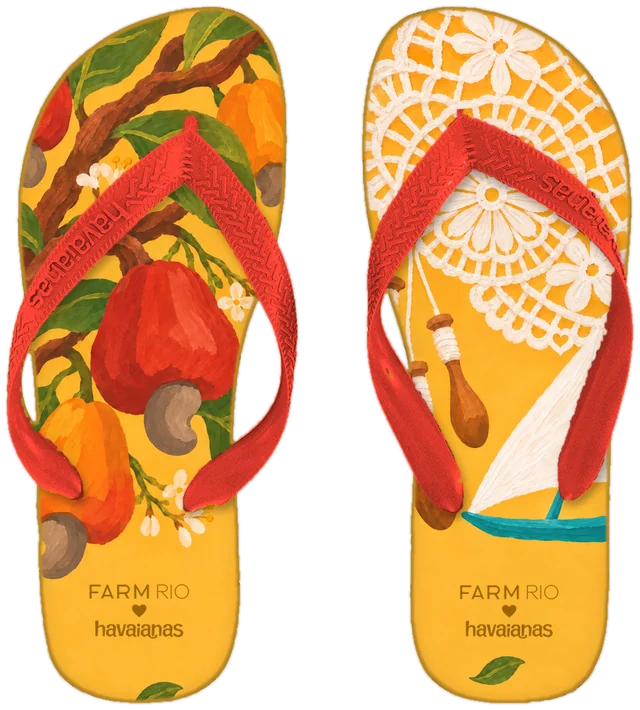
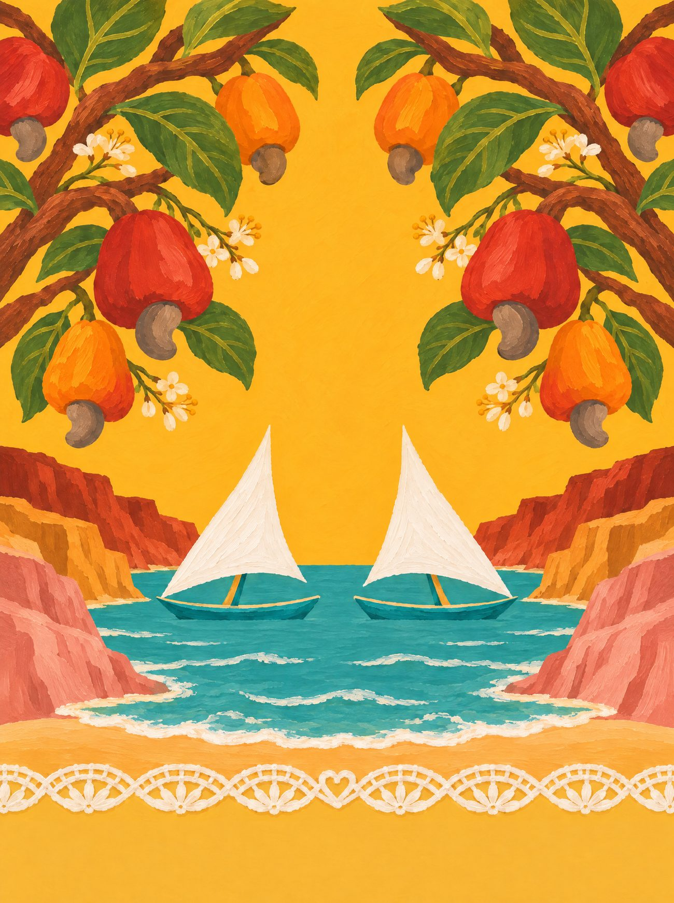
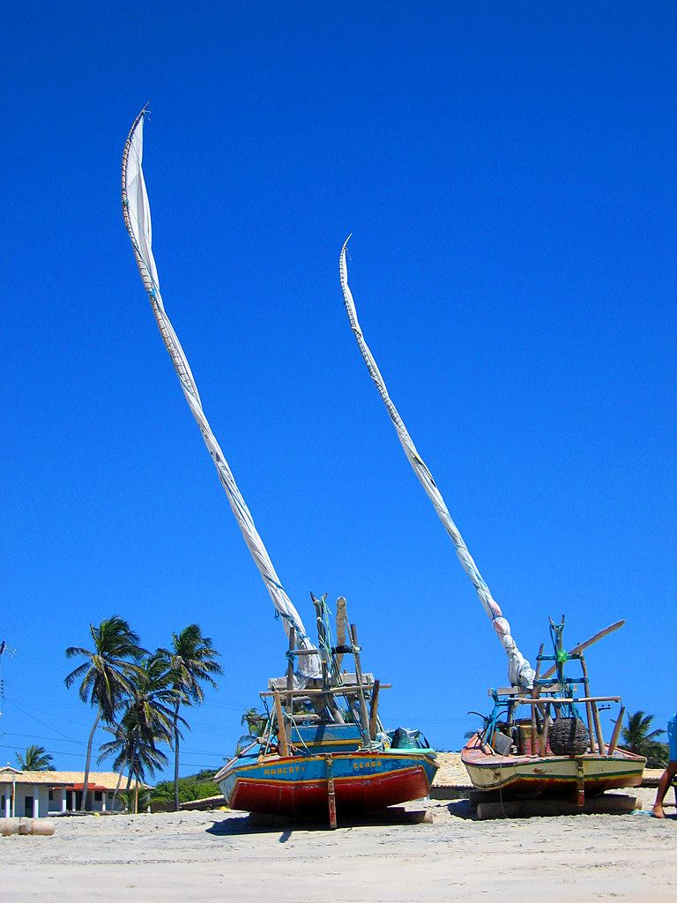
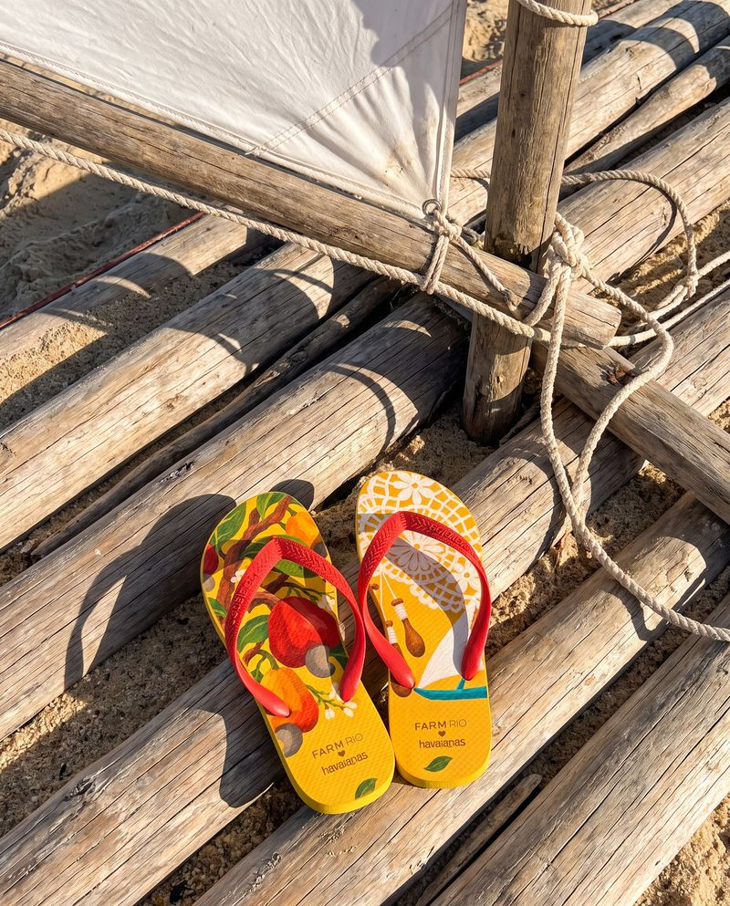
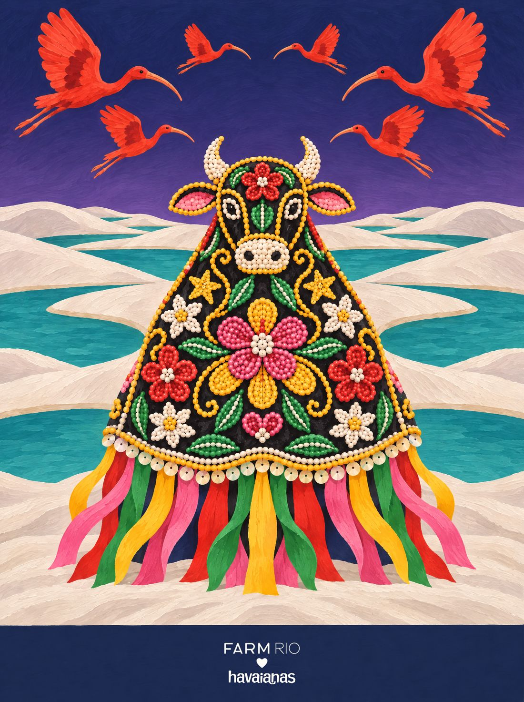

Ceará
Renda ao Vento
O vento do Ceará enche a vela da jangada, balança o caju no cajueiro e passa pelos bilros das rendeiras.
A renda de bilro é das rendeiras de Aquiraz, Prainha e Trairi. Numa coleção de verdade, ela entraria em parceria com elas, com o nome de cada uma e pagamento justo.
05 / 14 · Nordeste

o coração
Encontre o coração
Ele não está desenhado em cima de nada. Aparece quando os próprios elementos da cena se encontram. Procure na ilustração e toque nele.
♥ um ponto da renda de bilro, na barra


o par
Dois pés, uma história
na palmilha
pé esquerdo com o galho de cajueiro e cajus vermelhos e amarelos com a castanha; pé direito com um pedaço de renda de bilro, bilros pendurados e uma vela branca de jangada.
borracha e tira
amarelo-sol; tira vermelho-caju.
a arte da palmilha
Em díptico

caderno de campo
O Ceará tem vento. Ele enche a vela triangular da jangada no Mucuripe, empurra as dunas de Jericoacoara e balança o caju pendurado no cajueiro. Nas falésias de Canoa Quebrada e Morro Branco a areia tem dezenas de cores, e em Beberibe ela vira desenho dentro da garrafinha. Na varanda, em Aquiraz, a rendeira cruza os bilros sobre a almofada, num barulhinho de madeira que não para. E a carnaúba dá cera, palha e sombra.
trilha · Mucuripe (Fagner e Belchior) · o estalo dos bilros na almofada · o vento nas velas da jangada
A âncora: a renda de bilro com a vela da jangada: juntas, só no Ceará (o caju sozinho também é do RN e do PI).
pesquisa de campo
Na rua, antes do desenho



campanha
O par no lugar


fotos de campo deste estado


← Pernambuco